Chapter 43: Animal Reproduction and Development¶
Introduction¶
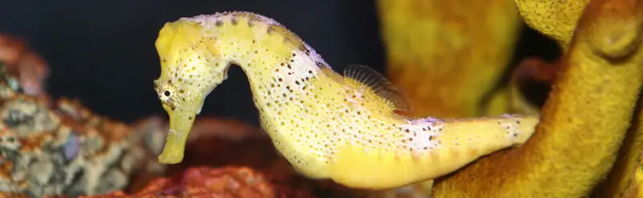
Animal reproduction is necessary for the survival of a species. In the animal kingdom, there are innumerable ways that species reproduce. Asexual reproduction produces genetically identical organisms (clones), whereas in sexual reproduction, the genetic material of two individuals combines to produce offspring that are genetically different from their parents.
Generally, the producers of sperm (the small gamete) are called males, producers of the eggs (the large gamete) are called females. Any other characteristics that may often be associated with sex, such as parental care or sexual behavior, are not universal throughout the animal kingdom. During sexual reproduction the male gamete (sperm) may be placed inside the female’s body for internal fertilization, or the sperm and eggs may be released into the environment for external fertilization. Seahorses, like the one shown in Figure 43.1, provide an example of the latter. Following a mating dance, the female lays eggs in the male seahorse’s abdominal brood pouch where they are fertilized. The eggs hatch and the offspring develop in the pouch for several weeks.
43.1 Reproduction Methods¶
Learning Objectives
By the end of this section, you will be able to do the following:
- Describe advantages and disadvantages of asexual and sexual reproduction
- Discuss asexual reproduction methods
- Discuss sexual reproduction methods
Animals produce offspring through asexual and/or sexual reproduction. Both methods have advantages and disadvantages. Asexual reproduction produces offspring that are genetically identical to the parent because the offspring are all clones of the original parent. A single individual can produce offspring asexually and large numbers of offspring can be produced quickly. In a stable or predictable environment, asexual reproduction is an effective means of reproduction because all the offspring will be adapted to that environment. In an unstable or unpredictable environment asexually-reproducing species may be at a disadvantage because all the offspring are genetically identical and may not have the genetic variation to survive in new or different conditions. On the other hand, the rapid rates of asexual reproduction may allow for a speedy response to environmental changes if individuals have mutations. An additional advantage of asexual reproduction is that colonization of new habitats may be easier when an individual does not need to find a mate to reproduce.
During sexual reproduction the genetic material of two individuals is combined to produce genetically diverse offspring that differ from their parents. The genetic diversity of sexually produced offspring is thought to give species a better chance of surviving in an unpredictable or changing environment. Species that reproduce sexually must maintain two different types of individuals, males and females, which can limit the ability to colonize new habitats as both sexes must be present.
Asexual Reproduction¶
Asexual reproduction occurs in prokaryotic microorganisms (bacteria) and in some eukaryotic single-celled and multi-celled organisms. There are a number of ways that animals reproduce asexually.
Fission¶
Fission, also called binary fission, occurs in prokaryotic microorganisms and in some invertebrate, multi-celled organisms. After a period of growth, an organism splits into two separate organisms. Some unicellular eukaryotic organisms undergo binary fission by mitosis. In other organisms, part of the individual separates and forms a second individual. This process occurs, for example, in many asteroid echinoderms through splitting of the central disk. Some sea anemones and some coral polyps (Figure 43.2) also reproduce through fission.
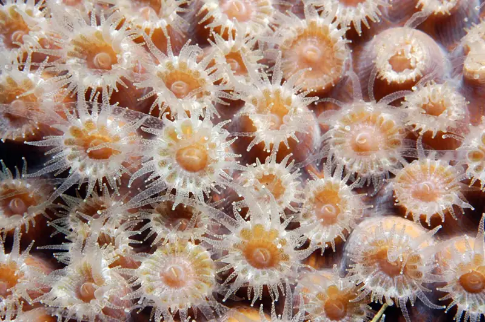
Budding¶
Budding is a form of asexual reproduction that results from the outgrowth of a part of a cell or body region leading to a separation from the original organism into two individuals. Budding occurs commonly in some invertebrate animals such as corals and hydras. In hydras, a bud forms that develops into an adult and breaks away from the main body, as illustrated in Figure 43.3, whereas in coral budding, the bud does not detach and multiplies as part of a new colony.
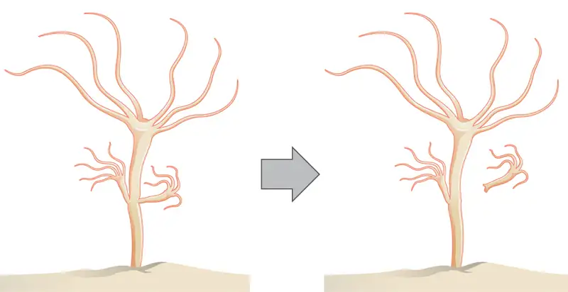
Interactive
Watch a video of a hydra budding. budding_hydra
Fragmentation¶
Fragmentation is the breaking of the body into two parts with subsequent regeneration. If the animal is capable of fragmentation, and the part is big enough, a separate individual will regrow.
For example, in many sea stars, asexual reproduction is accomplished by fragmentation. Figure 43.4 illustrates a sea star for which an arm of the individual is broken off and regenerates a new sea star. Fisheries workers have been known to try to kill the sea stars eating their clam or oyster beds by cutting them in half and throwing them back into the ocean. Unfortunately for the workers, the two parts can each regenerate a new half, resulting in twice as many sea stars to prey upon the oysters and clams. Fragmentation also occurs in annelid worms, turbellarians, and poriferans.
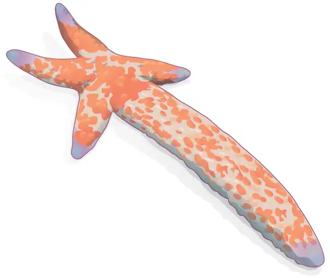
Note that in fragmentation, there is generally a noticeable difference in the size of the individuals, whereas in fission, two individuals of approximately the same size are formed.
Parthenogenesis¶
Parthenogenesis is a form of asexual reproduction where an egg develops into a complete individual without being fertilized. The resulting offspring can be either haploid or diploid, depending on the process and the species. Parthenogenesis occurs in invertebrates such as water fleas, rotifers, aphids, stick insects, some ants, wasps, and bees. Bees use parthenogenesis to produce haploid males (drones). If eggs are fertilized, diploid females develop, and if the fertilized eggs are fed a special diet (so called royal jelly), a queen is produced.
Some vertebrate animals—such as certain reptiles, amphibians, and fish—also reproduce through parthenogenesis. Although more common in plants, parthenogenesis has been observed in animal species that were segregated by sex in terrestrial or marine zoos. Two female Komodo dragons, a hammerhead shark, and a blacktop shark have produced parthenogenic young when the females have been isolated from males.
Sexual Reproduction¶
Sexual reproduction is the combination of (usually haploid) reproductive cells from two individuals to form a third (usually diploid) unique offspring. Sexual reproduction produces offspring with novel combinations of genes. This can be an adaptive advantage in unstable or unpredictable environments. As humans, we are used to thinking of animals as having two separate sexes—male and female—determined at conception. However, in the animal kingdom, there are many variations on this theme.
Hermaphroditism¶
Hermaphroditism occurs in animals where one individual has both male and female reproductive parts. Invertebrates such as earthworms, slugs, tapeworms and snails, shown in Figure 43.5, are often hermaphroditic. Hermaphrodites may self-fertilize or may mate with another of their species, fertilizing each other and both producing offspring. Self fertilization is common in animals that have limited mobility or are not motile, such as barnacles and clams.
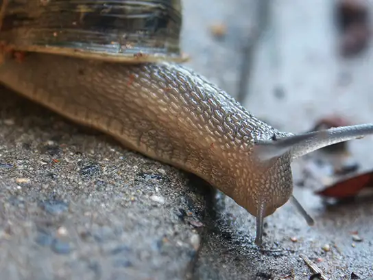
Sex Determination¶
Mammalian sex determination is determined genetically by the presence of X and Y chromosomes. Individuals homozygous for X (XX) are female and heterozygous individuals (XY) are male. The presence of a Y chromosome causes the development of male characteristics and its absence results in female characteristics. The XY system is also found in some insects and plants.
Avian sex determination is dependent on the presence of Z and W chromosomes. Homozygous for Z (ZZ) results in a male and heterozygous (ZW) results in a female. The W appears to be essential in determining the sex of the individual, similar to the Y chromosome in mammals. Some fish, crustaceans, insects (such as butterflies and moths), and reptiles use this system.
The sex of some species is not determined by genetics but by some aspect of the environment. Sex determination in some crocodiles and turtles, for example, is often dependent on the temperature during critical periods of egg development. This is referred to as environmental sex determination, or more specifically as temperature-dependent sex determination. In many turtles, cooler temperatures during egg incubation produce males and warm temperatures produce females. In some crocodiles, moderate temperatures produce males and both warm and cool temperatures produce females. In some species, sex is both genetic- and temperature-dependent. Note that in this discussion and throughout the chapter, we are speaking only about sex, not gender, when referring to males and females. (Gender is a more complex construct; beyond having social aspects, it is not universal in the animal kingdom.)
Individuals of some species change their sex during their lives, alternating between male and female. If the individual is female first, it is termed protogyny or “first female,” if it is male first, its termed protandry or “first male.” Oysters, for example, are born male, grow, and become female and lay eggs; some oyster species change sex multiple times.
43.2 Fertilization¶
Learning Objectives
By the end of this section, you will be able to do the following:
- Discuss internal and external methods of fertilization
- Describe the methods used by animals for development of offspring during gestation
- Describe the anatomical adaptations that occurred in animals to facilitate reproduction
Sexual reproduction starts with the combination of a sperm and an egg in a process called fertilization. This can occur either inside (internal fertilization) or outside (external fertilization) the body of the female. Humans provide an example of the former whereas seahorse reproduction is an example of the latter.
External Fertilization¶
External fertilization usually occurs in aquatic environments where both eggs and sperm are released into the water. After the sperm reaches the egg, fertilization takes place. Most external fertilization happens during the process of spawning where one or several females release their eggs and the male(s) release sperm in the same area, at the same time. The release of the reproductive material may be triggered by water temperature or the length of daylight. Nearly all fish spawn, as do crustaceans (such as crabs and shrimp), mollusks (such as oysters), squid, and echinoderms (such as sea urchins and sea cucumbers). Figure 43.6 shows salmon spawning in a shallow stream. Frogs, like those shown in Figure 43.7, also spawn.
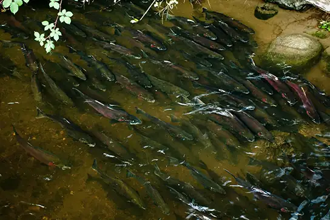
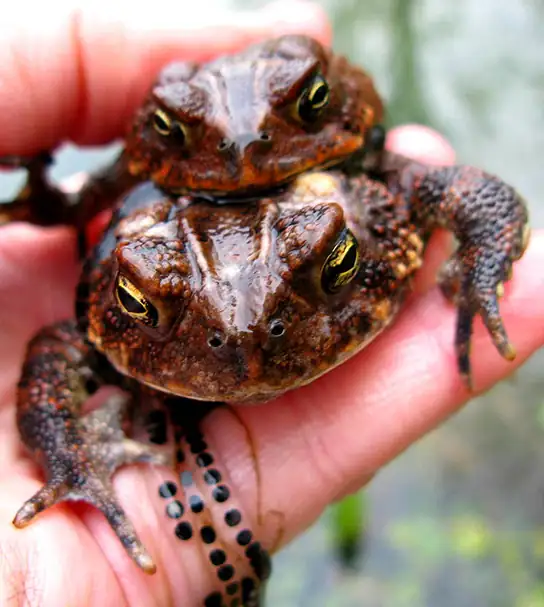
Pairs of fish that are not broadcast spawners may exhibit courtship behavior. This allows the female to select a particular male. The trigger for egg and sperm release (spawning) causes the egg and sperm to be placed in a small area, enhancing the possibility of fertilization.
External fertilization in an aquatic environment protects the eggs from drying out. Broadcast spawning can result in a greater mixture of the genes within a group, leading to higher genetic diversity and a greater chance of species survival in a hostile environment. For sessile aquatic organisms like sponges, broadcast spawning is the only mechanism for fertilization and colonization of new environments. The presence of the fertilized eggs and developing young in the water provides opportunities for predation resulting in a loss of offspring. Therefore, millions of eggs must be produced by individuals, and the offspring produced through this method must mature rapidly. The survival rate of eggs produced through broadcast spawning is low.
Internal Fertilization¶
Internal fertilization occurs most often in land-based animals, although some aquatic animals also use this method. There are three ways that offspring are produced following internal fertilization. In oviparity, fertilized eggs are laid outside the parent’s body and develop there, receiving nourishment from the yolk that is a part of the egg. This occurs in most bony fish, many reptiles, some cartilaginous fish, most amphibians, two mammals, and all birds. Reptiles and insects produce leathery eggs, while birds and turtles produce eggs with high concentrations of calcium carbonate in the shell, making them hard. Chicken eggs are an example of this second type.
In ovoviviparity, fertilized eggs are retained in the parent (usually the female), but the embryo obtains its nourishment from the egg’s yolk and the young are fully developed when they are hatched. This occurs in some bony fish (like the guppy Lebistes reticulatus), some sharks, some lizards, some snakes (such as the garter snake Thamnophis sirtalis), some vipers, and some invertebrate animals (like the Madagascar hissing cockroach Gromphadorhina portentosa).
In viviparity the young develop within the female, receiving nourishment from the parent’s blood through a placenta. The offspring develops in the female and is born alive. This occurs in most mammals, some cartilaginous fish, and a few reptiles.
Internal fertilization has the advantage of protecting the fertilized egg from dehydration on land. The embryo is isolated within the female, which limits predation on the young. Internal fertilization enhances the fertilization of eggs by a specific male. Fewer offspring are produced through this method, but their survival rate is higher than that for external fertilization.
The Evolution of Reproduction¶
Once multicellular organisms evolved and developed specialized cells, some also developed tissues and organs with specialized functions. An early development in reproduction occurred in the Annelids. These organisms produce sperm and eggs from undifferentiated cells in their coelom and store them in that cavity. When the coelom becomes filled, the cells are released through an excretory opening or by the body splitting open. Reproductive organs evolved with the development of gonads that produce sperm and eggs. These cells went through meiosis, an adaptation of mitosis, which reduced the number of chromosomes in each reproductive cell by half, while increasing the number of cells through cell division.
Complete reproductive systems were developed in insects, with separate sexes. Sperm are made in testes and then travel through coiled tubes to the epididymis for storage. Eggs mature in the ovary. When they are released from the ovary, they travel to the uterine tubes for fertilization. Some insects have a specialized sac, called a spermatheca, which stores sperm for later use, sometimes up to a year. Fertilization can be timed with environmental or food conditions that are optimal for offspring survival.
Vertebrates have similar structures, with a few differences. Non-mammals, such as birds and reptiles, have a common body opening, called a cloaca, for the digestive, excretory and reproductive systems. Coupling between birds usually involves positioning the cloaca openings opposite each other for transfer of sperm. Mammals have separate openings for the systems in the female and a uterus for support of developing offspring. The uterus has two chambers in species that produce large numbers of offspring at a time, while species that produce one offspring, such as primates, have a single uterus.
Sperm transfer from the male to the female during reproduction ranges from releasing the sperm into the watery environment for external fertilization, to the joining of cloaca in birds, to the development of a penis for direct delivery into the female’s vagina in mammals.
43.3 Human Reproductive Anatomy and Gametogenesis¶
Learning Objectives
By the end of this section, you will be able to do the following:
- Describe human male and female reproductive anatomies
- Discuss the human sexual response
- Describe spermatogenesis and oogenesis and discuss their differences and similarities
As animals became more complex, specific organs and organ systems developed to support specific functions for the organism. The reproductive structures that evolved in land animals allow males and females to mate, fertilize internally, and support the growth and development of offspring.
Human Reproductive Anatomy¶
The reproductive tissues of male and female humans develop similarly in utero until, in some cases, a low level of the hormone testosterone is released from gonads. Testosterone causes the undeveloped tissues to differentiate into organs, such as the scrotum and penis. When testosterone is absent, the tissues continue to develop into structures such as the ovaries and labia. These cells are considered bipotential: one group of cells has the potential to develop into either type of reproductive structure. Primitive gonads become testes or ovaries. Tissues that produce a penis in males produce a clitoris in females. The tissue that will become the scrotum in a male becomes the labia in a female; that is, they are homologous structures.
Male Reproductive Anatomy¶
In the male reproductive system, the scrotum houses the testicles or testes (singular: testis), including providing passage for blood vessels, nerves, and muscles related to testicular function. The testes are a pair of male reproductive organs that produce sperm and some reproductive hormones. Each testis is approximately 2.5 by 3.8 cm (1.5 by 1 in.) in size and divided into wedge-shaped lobules by connective tissue called septa. Coiled in each wedge are seminiferous tubules that produce sperm.
Sperm are immobile at body temperature; therefore, the scrotum and penis are external to the body, as illustrated in Figure 43.8 so that a proper temperature is maintained for motility. In land mammals, the pair of testes must be suspended outside the body at about 2° C lower than body temperature to produce viable sperm. Infertility can occur in land mammals when the testes do not descend through the abdominal cavity during fetal development.
Visual Connection
![Illustration shows a cross section of the penis and testes. The penis widens at the end, into the glans, which is surrounded by the foreskin. The urethra opens at the middle of the glans after running through the middle of the penis to the bladder. The tissue surrounding the urethra is the Corpus spongiosum, and above the Corpus spongiosum is the Corpus cavernosum. The testes, located immediately behind the penis, are covered by the scrotum. Seminiferous tubules are located in the testes. The epididymis partly surrounds the sac containing the seminiferous tubules. The Vas deferens is a tube connecting the seminiferous tubules to the ejaculatory duct, which begins in the prostate gland. The prostate gland is located behind and below the bladder. The seminal vesicle, located above the prostate, also connects to the ejaculatory duct. The bulbourethral gland connects to the urethra where the urethra enters the penis.](img/figure-43-03-01.webp)
Which of the following statements about the male reproductive system is false?
- The vas deferens carries sperm from the testes to the penis.
- Sperm mature in seminiferous tubules in the testes.
- Both the prostate and the bulbourethral glands produce components of the semen.
- The prostate gland is located in the testes.
Sperm mature in seminiferous tubules that are coiled inside the testes, as illustrated in Figure 43.8. The walls of the seminiferous tubules are made up of the developing sperm cells, with the least developed sperm at the periphery of the tubule and the fully developed sperm in the lumen. The sperm cells are mixed with “nursemaid” cells called Sertoli cells which protect the germ cells and promote their development. Other cells mixed in the wall of the tubules are the interstitial cells of Leydig. These cells produce high levels of testosterone once the male reaches adolescence.
When the sperm have developed flagella and are nearly mature, they leave the testicles and enter the epididymis, shown in Figure 43.8. This structure resembles a comma and lies along the top and posterior portion of the testes; it is the site of sperm maturation. The sperm leave the epididymis and enter the vas deferens (or ductus deferens), which carries the sperm, behind the bladder, and forms the ejaculatory duct with the duct from the seminal vesicles. During a vasectomy, a section of the vas deferens is removed, preventing sperm from being passed out of the body during ejaculation and preventing fertilization.
Semen is a mixture of sperm and spermatic duct secretions (about 10 percent of the total) and fluids from accessory glands that contribute most of the semen’s volume. Sperm are haploid cells, consisting of a flagellum as a tail, a neck that contains the cell’s energy-producing mitochondria, and a head that contains the genetic material. Figure 43.9 shows a micrograph of human sperm as well as a diagram of the parts of the sperm. An acrosome is found at the top of the head of the sperm. This structure contains lysosomal enzymes that can digest the protective coverings that surround the egg to help the sperm penetrate and fertilize the egg. An ejaculate will contain from two to five milliliters of fluid with from 50–120 million sperm per milliliter.
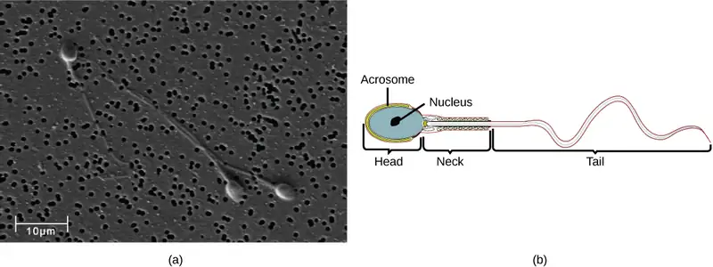
The bulk of the semen comes from the accessory glands associated with the male reproductive system. These are the seminal vesicles, the prostate gland, and the bulbourethral gland, all of which are illustrated in Figure 43.8. The seminal vesicles are a pair of glands that lie along the posterior border of the urinary bladder. The glands make a solution that is thick, yellowish, and alkaline. As sperm are only motile in an alkaline environment, a basic pH is important to reverse the acidity of the vaginal environment. The solution also contains mucus, fructose (a sperm mitochondrial nutrient), a coagulating enzyme, ascorbic acid, and local-acting hormones called prostaglandins. The seminal vesicle glands account for 60 percent of the bulk of semen.
The penis, illustrated in Figure 43.8, is an organ that drains urine from the renal bladder and functions as a copulatory organ during intercourse. The penis contains three tubes of erectile tissue running through the length of the organ. These consist of a pair of tubes on the dorsal side, called the corpus cavernosum, and a single tube of tissue on the ventral side, called the corpus spongiosum. This tissue will become engorged with blood, becoming erect and hard, in preparation for intercourse. The organ is inserted into the vagina culminating with an ejaculation. During intercourse, the smooth muscle sphincters at the opening to the renal bladder close and prevent urine from entering the penis. An orgasm is a two-stage process: first, glands and accessory organs connected to the testes contract, then semen (containing sperm) is expelled through the urethra during ejaculation. After intercourse, the blood drains from the erectile tissue and the penis becomes flaccid.
The walnut-shaped prostate gland surrounds the urethra, the connection to the urinary bladder. It has a series of short ducts that directly connect to the urethra. The gland is a mixture of smooth muscle and glandular tissue. The muscle provides much of the force needed for ejaculation to occur. The glandular tissue makes a thin, milky fluid that contains citrate (a nutrient), enzymes, and prostate specific antigen (PSA). PSA is a proteolytic enzyme that helps to liquefy the ejaculate several minutes after release from the male. Prostate gland secretions account for about 30 percent of the bulk of semen.
The bulbourethral gland, or Cowper’s gland, releases its secretion prior to the release of the bulk of the semen. It neutralizes any acid residue in the urethra left over from urine. This usually accounts for a couple of drops of fluid in the total ejaculate and may contain a few sperm. Withdrawal of the penis from the vagina before ejaculation to prevent pregnancy may not work if sperm are present in the bulbourethral gland secretions. The location and functions of the male reproductive organs are summarized in Table 43.1.
Table 43.1
| Male Reproductive Anatomy | ||
|---|---|---|
| Organ | Location | Function |
| Scrotum | External | Carry and support testes |
| Penis | External | Deliver urine, copulating organ |
| Testes | Internal | Produce sperm and male hormones |
| Seminal Vesicles | Internal | Contribute to semen production |
| Prostate Gland | Internal | Contribute to semen production |
| Bulbourethral Glands | Internal | Clean urethra at ejaculation |
Female Reproductive Anatomy¶
A number of reproductive structures are exterior to the female’s body. These include the breasts and the vulva, which consists of the mons pubis, clitoris, labia majora, labia minora, and the vestibular glands, all illustrated in Figure 43.10. The location and functions of the female reproductive organs are summarized in Table 43.2. The vulva is an area associated with the vestibule which includes the structures found in the inguinal (groin) area. The mons pubis is a round, fatty area that overlies the pubic symphysis. The clitoris is a structure with erectile tissue that contains a large number of sensory nerves and serves as a source of stimulation during intercourse. The labia majora are a pair of elongated folds of tissue that run posterior from the mons pubis and enclose the other components of the vulva. The labia majora derive from the same tissue that produces the scrotum in a male. The labia minora are thin folds of tissue centrally located within the labia majora. These labia protect the openings to the vagina and urethra. The mons pubis and the anterior portion of the labia majora become covered with hair during adolescence; the labia minora is hairless. The greater vestibular glands are found at the sides of the vaginal opening and provide lubrication during intercourse.
![Side and front views of female reproductive organs are shown. The vagina is wide at the bottom, and narrows into the cervix. Above the cervix is the uterus, which is shaped like a triangle pointing down. Fallopian tubes extend from the top sides of the uterus. The Fallopian tubes curve back in toward the uterus, and end in fingerlike appendages called fimbriae. The ovaries are located between the fimbriae and the uterus. The urethra is located in front of the vagina, and the rectum is located behind. The clitoris is a structure located in front of the urethra. The labia minora and labia majora are folds of tissue on either side of the vagina.](img/figure-43-03-03ab.webp)
Table 43.2
| Female Reproductive Anatomy | ||
|---|---|---|
| Organ | Location | Function |
| Clitoris | External | Sensory organ |
| Mons pubis | External | Fatty area overlying pubic bone |
| Labia majora | External | Covers labia minora |
| Labia minora | External | Covers vestibule |
| Greater vestibular glands | External | Secrete mucus; lubricate vagina |
| Breasts | External | Produce and deliver milk |
| Ovaries | Internal | Carry and develop eggs |
| Oviducts (Fallopian tubes) | Internal | Transport egg to uterus |
| Uterus | Internal | Support developing embryo |
| Vagina | Internal | Common tube for intercourse, birth canal, passing menstrual flow |
The breasts consist of mammary glands and fat. The size of the breast is determined by the amount of fat deposited behind the gland. Each gland consists of 15 to 25 lobes that have ducts that empty at the nipple and that supply the nursing child with nutrient- and antibody-rich milk to aid development and protect the child.
Internal female reproductive structures include ovaries, oviducts, the uterus, and the vagina, shown in Figure 43.10. The pair of ovaries is held in place in the abdominal cavity by a system of ligaments. Ovaries consist of a medulla and cortex: the medulla contains nerves and blood vessels to supply the cortex with nutrients and remove waste. The outer layers of cells of the cortex are the functional parts of the ovaries. The cortex is made up of follicular cells that surround eggs that develop during fetal development in utero. During the menstrual period, a batch of follicular cells develops and prepares the eggs for release. At ovulation, one follicle ruptures and one egg is released, as illustrated in Figure 43.11a.
![Illustration A shows a cross section of a human ovary, which is oval with a stem-like structure at one end that anchors it to the uterus. The central part of the ovary is the medulla, and the outer part is the cortex. Follicles exist in the cortex. Small, immature follicles are located near this stem-like structure. As a follicle matures, it grows and moves toward the edge of the ovary opposite the stem, it ruptures, releasing the egg. The follicle is now called a corpus luteum. The corpus luteum matures and moves back toward the stem, along the opposite edge of the ovary from which the follicle matured. The corpus luteum shrinks and eventually disintegrates. The light micrograph in illustration B shows an oval follicle with a large oocyte located at the center. Around the oocyte are much smaller cells.](img/figure-b43-03-06ab.webp)
The oviducts, or fallopian tubes, extend from the uterus in the lower abdominal cavity to the ovaries, but they are not in contact with the ovaries. The lateral ends of the oviducts flare out into a trumpet-like structure and have a fringe of finger-like projections called fimbriae, illustrated in Figure 43.10b. When an egg is released at ovulation, the fimbrae help the nonmotile egg enter into the tube and passage to the uterus. The walls of the oviducts are ciliated and are made up mostly of smooth muscle. The cilia beat toward the middle, and the smooth muscle contracts in the same direction, moving the egg toward the uterus. Fertilization usually takes place within the oviducts and the developing embryo is moved toward the uterus for development. It usually takes the egg or embryo a week to travel through the oviduct. Sterilization in females is called a tubal ligation; it is analogous to a vasectomy in males in that the oviducts are severed and sealed.
The uterus is a structure about the size of a woman’s fist. This is lined with an endometrium rich in blood vessels and mucus glands. The uterus supports the developing embryo and fetus during gestation. The thickest portion of the wall of the uterus is made of smooth muscle. Contractions of the smooth muscle in the uterus aid in passing the baby through the vagina during labor. A portion of the lining of the uterus sloughs off during each menstrual period, and then builds up again in preparation for an implantation. Part of the uterus, called the cervix, protrudes into the top of the vagina. The cervix functions as the birth canal.
The vagina is a muscular tube that serves several purposes. It allows menstrual flow to leave the body. It is the receptacle for the penis during intercourse and the vessel for the delivery of offspring. It is lined by stratified squamous epithelial cells to protect the underlying tissue.
Sexual Response during Intercourse¶
The sexual response in humans is both psychological and physiological. People with testes-based or ovary-based reproductive systems experience sexual arousal through psychological and physical stimulation. There are four phases of the sexual response. During phase one, called excitement, vasodilation leads to vasocongestion in erectile tissues. The nipples, clitoris, labia, and penis engorge with blood and become enlarged. Vaginal secretions are released to lubricate the vagina to facilitate intercourse. During the second phase, called the plateau, stimulation continues, the outer third of the vaginal wall enlarges with blood, and breathing and heart rate increase.
During phase three, or orgasm, rhythmic, involuntary contractions of muscles occur. In the male, the reproductive accessory glands and tubules constrict placing semen in the urethra, then the urethra contracts expelling the semen through the penis. In the female, the uterus and vaginal muscles contract in waves that may last slightly less than a second each. During phase four, or resolution, the processes described in the first three phases reverse themselves and return to their normal state. Males experience a refractory period in which they cannot maintain an erection or ejaculate for a period of time ranging from minutes to hours.
Gametogenesis (Spermatogenesis and Oogenesis)¶
Gametogenesis, the production of sperm and eggs, takes place through the process of meiosis. During meiosis, two cell divisions separate the paired chromosomes in the nucleus and then separate the chromatids that were made during an earlier stage of the cell’s life cycle. Meiosis produces haploid cells with half of each pair of chromosomes normally found in diploid cells. The production of sperm is called spermatogenesis and the production of eggs is called oogenesis.
Spermatogenesis¶
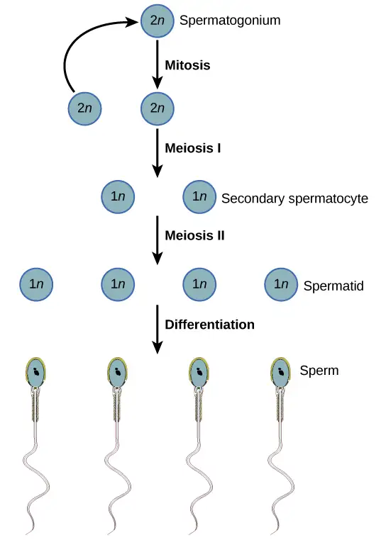
Spermatogenesis, illustrated in Figure 43.12, occurs in the wall of the seminiferous tubules (Figure 43.8), with stem cells at the periphery of the tube and the spermatozoa at the lumen of the tube. Immediately under the capsule of the tubule are diploid, undifferentiated cells. These stem cells, called spermatogonia (singular: spermatagonium), go through mitosis with one offspring going on to differentiate into a sperm cell and the other giving rise to the next generation of sperm.
Meiosis starts with a cell called a primary spermatocyte. At the end of the first meiotic division, a haploid cell is produced called a secondary spermatocyte. This cell is haploid and must go through another meiotic cell division. The cell produced at the end of meiosis is called a spermatid and when it reaches the lumen of the tubule and grows a flagellum, it is called a sperm cell. Four sperm result from each primary spermatocyte that goes through meiosis.
Stem cells are deposited during gestation and are present at birth through the beginning of adolescence, but in an inactive state. During adolescence, gonadotropic hormones from the anterior pituitary cause the activation of these cells and the production of viable sperm. This continues into old age.
Interactive
Visit this site to see the process of spermatogenesis.
Oogenesis¶
Oogenesis, illustrated in Figure 43.13, occurs in the outermost layers of the ovaries. As with sperm production, oogenesis starts with a germ cell, called an oogonium (plural: oogonia), but this cell undergoes mitosis to increase in number, eventually resulting in up to about one to two million cells in the embryo.
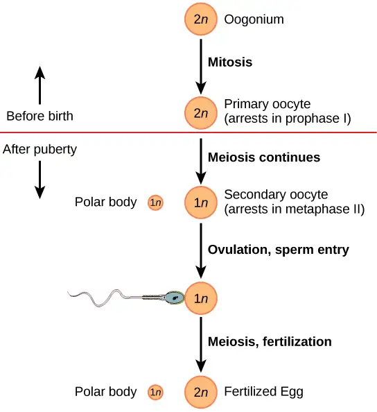
The cell starting meiosis is called a primary oocyte, as shown in Figure 43.13. This cell will start the first meiotic division and be arrested in its progress in the first prophase stage. At the time of birth, all future eggs are in the prophase stage. At adolescence, anterior pituitary hormones cause the development of a number of follicles in an ovary. This results in the primary oocyte finishing the first meiotic division. The cell divides unequally, with most of the cellular material and organelles going to one cell, called a secondary oocyte, and only one set of chromosomes and a small amount of cytoplasm going to the other cell. This second cell is called a polar body and usually dies. A secondary meiotic arrest occurs, this time at the metaphase II stage. At ovulation, this secondary oocyte will be released and travel toward the uterus through the oviduct. If the secondary oocyte is fertilized, the cell continues through the meiosis II, producing a second polar body and a fertilized egg containing all 46 chromosomes of a human being, half of them coming from the sperm.
Egg production begins before birth, is arrested during meiosis until puberty, and then individual cells continue through at each menstrual cycle. One egg is produced from each meiotic process, with the extra chromosomes and chromatids going into polar bodies that degenerate and are reabsorbed by the body.
43.4 Hormonal Control of Human Reproduction¶
Learning Objectives
By the end of this chapter, you will be able to do the following:
- Describe the roles of male and female reproductive hormones
- Discuss the interplay of the ovarian and menstrual cycles
- Describe the process of menopause
The human male and female reproductive cycles are controlled by the interaction of hormones from the hypothalamus and anterior pituitary with hormones from reproductive tissues and organs. In both sexes, the hypothalamus monitors and causes the release of hormones from the pituitary gland. When the reproductive hormone is required, the hypothalamus sends a gonadotropin-releasing hormone (GnRH) to the anterior pituitary. This causes the release of follicle stimulating hormone (FSH) and luteinizing hormone (LH) from the anterior pituitary into the blood. Note that the body must reach puberty in order for the adrenals to release the hormones that must be present for GnRH to be produced. Although FSH and LH are named after their functions in female reproduction, they are produced in both sexes and play important roles in controlling reproduction. Other hormones have specific functions in the male and female reproductive systems.
Male Hormones¶
At the onset of puberty, the hypothalamus causes the release of FSH and LH into the male system for the first time. FSH enters the testes and stimulates the Sertoli cells to begin facilitating spermatogenesis using negative feedback, as illustrated in Figure 43.14. LH also enters the testes and stimulates the interstitial cells of Leydig to make and release testosterone into the testes and the blood.
Testosterone, the hormone responsible for the secondary sexual characteristics that develop in the male during adolescence, stimulates spermatogenesis. These secondary sex characteristics include a deepening of the voice, the growth of facial, axillary, and pubic hair, and the beginnings of the sex drive.
![Hormonal control of the male reproductive system is mediated by the hypothalamus, anterior pituitary and testes. The hypothalamus releases GnRH, causing the anterior pituitary to release LH and FSH. FSH and LH both act on the testes. FSH stimulates the Sertoli cells in the testes to facilitate spermatogenesis and to secrete inhibin. LH causes the Leydig cells in the testes to secrete testosterone. Testosterone further stimulates spermatogenesis by the Sertoli cells, but inhibits GnRH, LH, and FSH production by the hypothalamus and anterior pituitary. Inhibin secreted by Sertoli cells also inhibits FSH and LH production by the anterior pituitary.](img/figure-43-04-01.webp)
A negative feedback system occurs in the male with rising levels of testosterone acting on the hypothalamus and anterior pituitary to inhibit the release of GnRH, FSH, and LH. The Sertoli cells produce the hormone inhibin, which is released into the blood when the sperm count is too high. This inhibits the release of GnRH and FSH, which will cause spermatogenesis to slow down. If the sperm count reaches 20 million/ml, the Sertoli cells cease the release of inhibin, and the sperm count increases.
Female Hormones¶
The control of reproduction in females is more complex. As with the male, the anterior pituitary hormones cause the release of the hormones FSH and LH. In addition, estrogens and progesterone are released from the developing follicles. Estradiol is the reproductive hormone in females that assists in endometrial regrowth, ovulation, and calcium absorption; it is also responsible for the secondary sexual characteristics of females. These include breast development, flaring of the hips, and a shorter period necessary for bone maturation. Progesterone assists in endometrial regrowth and inhibition of FSH and LH release.
In females, FSH stimulates development of egg cells, called ova, which develop in structures called follicles. Follicle cells produce the hormone inhibin, which inhibits FSH production. LH also plays a role in the development of ova, induction of ovulation, and stimulation of estradiol, the most potent and prevalent form of estrogen, and progesterone production by the ovaries. Estradiol and progesterone are steroid hormones that prepare the body for pregnancy. Estradiol produces secondary sex characteristics in females, while both estradiol and progesterone regulate the menstrual cycle.
The Ovarian Cycle and the Menstrual Cycle¶
The ovarian cycle governs the preparation of endocrine tissues and release of eggs, while the menstrual cycle governs the preparation and maintenance of the uterine lining. These cycles occur concurrently and are coordinated over a 22–32 day cycle, with an average length of 28 days.
The first half of the ovarian cycle is the follicular phase shown in Figure 43.15. Slowly rising levels of FSH and LH cause the growth of follicles on the surface of the ovary. This process prepares the egg for ovulation. As the follicles grow, they begin releasing estrogens and a low level of progesterone. At this stage, progesterone helps the thickening of the endometrium to make it receptive to implantation of the fertilized egg. If the fertilization of the egg happens, it takes place in the fallopian tube. The trip of a fertilized egg through the fallopian tube takes about seven days. At this stage of development, called the morula, there are 30-60 cells. If pregnancy implantation does not occur, the lining is sloughed off. After about five days, estrogen levels rise and the menstrual cycle enters the proliferative phase. The endometrium begins to regrow, replacing the blood vessels and glands that deteriorated during the end of the last cycle.
Visual Connection
![Hormone levels during the follicular phase, ovulation, and the luteal phase are compared. During the follicular phase, L H and F S H secreted from the pituitary stimulate several follicles to grow. The follicles produce low levels of estradiol that inhibit G n R H secretion by the hypothalamus, keeping L H and F S H levels low. Low levels of estradiol also cause the endometrial arteries to constrict, resulting in menstruation. During the time leading up to ovulation, L H and F S H stimulate maturation of one of the follicles. The growing follicle begins to produce high levels of estradiol, which stimulates G n R H secretion by the hypothalamus. As a result, L H and F S H levels rise, resulting in ovulation about a day later. Estradiol also causes the endometrium to thicken. After ovulation, the ovarian cycle enters the luteal phase. L H from the pituitary stimulates growth of the corpus luteum from the ruptured follicle. The corpus luteum secretes estradiol and progesterone that block G n R H production by the hypothalamus and L H and F S H production by the pituitary. Estradiol and progesterone also cause the endometrium to further develop.](img/figure-b43-04-02.webp)
Which of the following statements about hormone regulation of the ovarian reproductive cycle is false?
- LH and FSH are produced in the pituitary, and estradiol and progesterone are produced in the ovaries.
- Estradiol and progesterone secreted from the corpus luteum cause the endometrium to thicken.
- Both progesterone and estradiol are produced by the follicles.
- Secretion of GnRH by the hypothalamus is inhibited by low levels of estradiol but stimulated by high levels of estradiol.
Just prior to the middle of the cycle (approximately day 14), the high level of estrogen causes FSH and especially LH to rise rapidly, then fall. The spike in LH causes ovulation: the most mature follicle, like that shown in Figure 43.16, ruptures and releases its egg. The follicles that did not rupture degenerate and their eggs are lost. The level of estrogen decreases when the extra follicles degenerate.
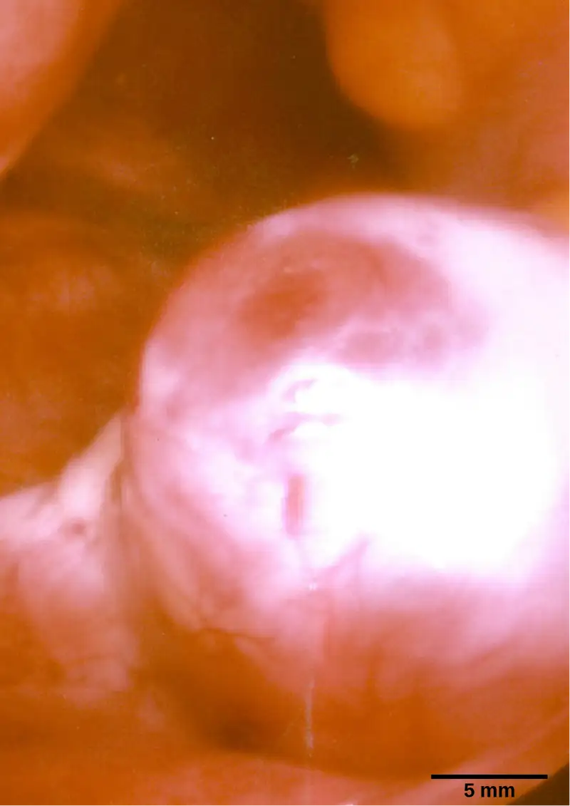
Following ovulation, the ovarian cycle enters its luteal phase, illustrated in Figure 43.15 and the menstrual cycle enters its secretory phase, both of which run from about day 15 to 28. The luteal and secretory phases refer to changes in the ruptured follicle. The cells in the follicle undergo physical changes and produce a structure called a corpus luteum. The corpus luteum produces estrogen and progesterone. The progesterone facilitates the regrowth of the uterine lining and inhibits the release of further FSH and LH. The uterus is being prepared to accept a fertilized egg, should it occur during this cycle. The inhibition of FSH and LH prevents any further eggs and follicles from developing, while the progesterone is elevated. The level of estrogen produced by the corpus luteum increases to a steady level for the next few days.
If no fertilized egg is implanted into the uterus, the corpus luteum degenerates and the levels of estrogen and progesterone decrease. The endometrium begins to degenerate as the progesterone levels drop, initiating the next menstrual cycle. The decrease in progesterone also allows the hypothalamus to send GnRH to the anterior pituitary, releasing FSH and LH and starting the cycles again. Figure 43.17 visually compares the ovarian and uterine cycles as well as the commensurate hormone levels.
Visual Connection
![The menstrual cycle encompasses both an ovarian cycle and a uterine cycle. The uterine cycle is divided into menstrual flow, the proliferative phase and the secretory phase. The ovarian cycle is separated into follicular and luteal phases. At day zero the uterine cycle enters the menstrual phase and the ovarian cycle enters the follicular phase. Menstruation begins, and the follicle inside the uterus begins to grow. The level of the pituitary hormone F S H rises slightly, while L H levels remain low. The levels of ovarian hormones estradiol and progesterone remain low. After menses the uterine cycle enters the proliferative phase and the follicle continues to grow. The level of the ovarian hormone estradiol begins to rapidly rise. Toward the end of the proliferative phase, levels of the pituitary hormones F S H and L H rise as well. Around day fourteen, just after the levels of estrogen, progesterone and estradiol reach their peak, ovulation occurs. The follicle ruptures, releasing the oocyte. The ovarian cycle enters the luteal phase. The follicle grows into a corpus luteum and then degenerates. The uterus enters the secretory phase. Progesterone levels increase and estradiol levels, which had dropped after ovulation, increase as well. Toward the end of the secretory phase estrogen and progesterone levels decrease, reaching their baseline levels around day 28. At this point menstruation begins.](img/figure-b43-04-03.webp)
Which of the following statements about the menstrual cycle is false?
- Progesterone levels rise during the luteal phase of the ovarian cycle and the secretory phase of the uterine cycle.
- Menstruation occurs just after LH and FSH levels peak.
- Menstruation occurs after progesterone levels drop.
- Estrogen levels rise before ovulation, while progesterone levels rise after.
Menopause¶
As people with ovarian reproductive systems approach their mid-40s to mid-50s, their ovaries begin to lose their sensitivity to FSH and LH. Menstrual periods become less frequent and finally cease; this is menopause. There are still eggs and potential follicles on the ovaries, but without the stimulation of FSH and LH, they will not produce a viable egg to be released. One outcome of this is the inability to have children.
The side effects of menopause include hot flashes, heavy sweating (especially at night), headaches, some hair loss, muscle pain, vaginal dryness, insomnia, depression, weight gain, and mood swings. Estrogen is involved in calcium metabolism and, without it, blood levels of calcium decrease. To replenish the blood, calcium is lost from bone which may decrease the bone density and lead to osteoporosis. Supplementation of estrogen in the form of hormone replacement therapy (HRT) can prevent bone loss, but the therapy can have negative side effects. While HRT is thought to give some protection from colon cancer, osteoporosis, heart disease, macular degeneration, and possibly depression, its negative side effects include increased risk of: stroke or heart attack, blood clots, breast cancer, ovarian cancer, endometrial cancer, gall bladder disease, and possibly dementia.
Career Connection: Reproductive Endocrinologist
A reproductive endocrinologist is a physician who treats a variety of hormonal disorders related to reproduction and infertility. The disorders include menstrual problems, infertility, pregnancy loss, sexual dysfunction, and menopause. Doctors may use fertility drugs, surgery, or assisted reproductive techniques (ART) in their therapy. ART involves the use of procedures to manipulate the egg or sperm to facilitate reproduction, such as in vitro fertilization.
Reproductive endocrinologists undergo extensive medical training, first in a four-year residency in obstetrics and gynecology, then in a three-year fellowship in reproductive endocrinology. To be board certified in this area, the physician must pass written and oral exams in both areas.
43.5 Human Pregnancy and Birth¶
Learning Objectives
By the end of this section, you will be able to do the following:
- Explain fetal development during the three trimesters of gestation
- Describe labor and delivery
- Compare the efficacy and duration of various types of contraception
- Discuss causes of infertility and the therapeutic options available
Pregnancy begins with the fertilization of an egg and continues through to the birth of the individual. The length of time of gestation varies among animals, but is very similar among the great apes: human gestation is 266 days, while chimpanzee gestation is 237 days, a gorilla’s is 257 days, and orangutan gestation is 260 days long. The fox has a 57-day gestation. Dogs and cats have similar gestations averaging 60 days. The longest gestation for a land mammal is an African elephant at 640 days. The longest gestations among marine mammals are the beluga and sperm whales at 460 days.
Human Gestation¶
Twenty-four hours before fertilization, the egg has finished meiosis and becomes a mature oocyte. When fertilized (at conception) the egg becomes known as a zygote. The zygote travels through the oviduct to the uterus (Figure 43.18). The developing embryo must implant into the wall of the uterus within seven days, or it will deteriorate and die. The outer layers of the zygote (blastocyst) grow into the endometrium by digesting the endometrial cells, and wound healing of the endometrium closes up the blastocyst into the tissue. Another layer of the blastocyst, the chorion, begins releasing a hormone called human beta chorionic gonadotropin (β-HCG) which makes its way to the corpus luteum and keeps that structure active. This ensures adequate levels of progesterone that will maintain the endometrium of the uterus for the support of the developing embryo. Pregnancy tests determine the level of β-HCG in urine or serum. If the hormone is present, the test is positive.
![Upon ovulation, an oocyte is released from the ovary and enters the fallopian tubule. Fertilization by a sperm occurs at day zero, resulting in a single-celled zygote. Around day two, the zygote undergoes cell division. More cell divisions occur on the third and fourth day, resulting in four-cell and eight-cell stages. By this time the cell mass has traveled to the end of the fallopian tube. Around day five the cell mass enters the uterus and differentiates into a blastocyst that is hollow inside (a fluid-filled cavity called a blastocoel), with an inner cell mass off to one side. The layer of cells on the outside of the blastocyst is called the trophoblast. Around day eight or nine the blastocyst implants in the wall of the uterus, with the inner cell mass facing the wall.](img/figure-43-07-01.webp)
The gestation period is divided into three equal periods or trimesters. During the first two to four weeks of the first trimester, nutrition and waste are handled by the endometrial lining through diffusion. As the trimester progresses, the outer layer of the embryo begins to merge with the endometrium, and the placenta forms. This organ takes over the nutrient and waste requirements of the embryo and fetus, with the parent’s blood passing nutrients to the placenta and removing waste from it. Chemicals from the fetus, such as bilirubin, are processed by the parent’s liver for elimination. Some of the parent’s immunoglobulins will pass through the placenta, providing passive immunity against some potential infections.
Internal organs and body structures begin to develop during the first trimester. By five weeks, limb buds, eyes, the heart, and liver have been basically formed. By eight weeks, the term fetus applies, and the body is essentially formed, as shown in Figure 43.19. The individual is about five centimeters (two inches) in length and many of the organs, such as the lungs and liver, are not yet functioning. Exposure to any toxins is especially dangerous during the first trimester, as all of the body’s organs and structures are going through initial development. Anything that affects that development can have a severe effect on the fetus’ survival.
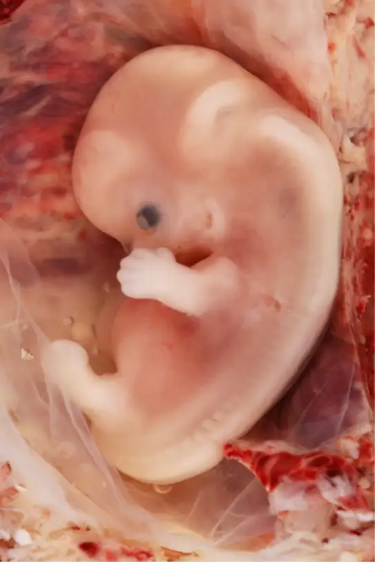
During the second trimester, the fetus grows to about 30 cm (12 inches), as shown in Figure 43.20. It becomes active and the pregnant person usually feels the first movements. All organs and structures continue to develop. The placenta has taken over the functions of nutrition and waste and the production of estrogen and progesterone from the corpus luteum, which has degenerated. The placenta will continue functioning up through the delivery of the baby.
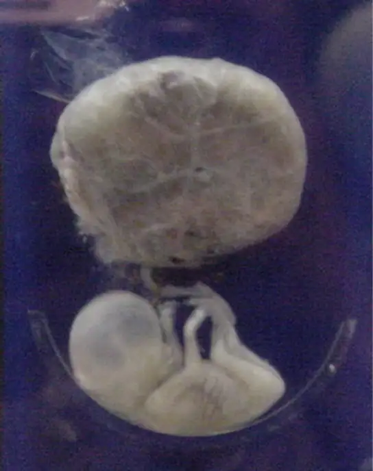
During the third trimester, the fetus grows to 3 to 4 kg (6 ½ -8 ½ lbs.) and about 50 cm (19-20 inches) long, as illustrated in Figure 43.21. This is the period of the most rapid growth during the pregnancy. Organ development continues to birth (and some systems, such as the nervous system and liver, continue to develop after birth). The pregnant person will be most uncomfortable during this trimester. They may urinate frequently due to pressure on the bladder from the fetus. There may also be intestinal blockage and circulatory problems, especially in the legs, where clots may form due to pressure from the fetus on returning veins as they enter the abdominal cavity.
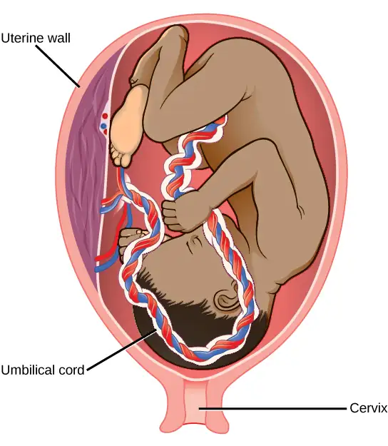
Interactive
Visit this site to see the stages of human fetal development.
Labor and Birth¶
Labor is the physical efforts of expulsion of the fetus and the placenta from the uterus during birth (parturition). Toward the end of the third trimester, estrogen causes receptors on the uterine wall to develop and bind the hormone oxytocin. At this time, the baby reorients, facing forward and down with the back or crown of the head engaging the cervix (uterine opening). This causes the cervix to stretch and nerve impulses are sent to the hypothalamus, which signals for the release of oxytocin from the posterior pituitary. The oxytocin causes the smooth muscle in the uterine wall to contract. At the same time, the placenta releases prostaglandins into the uterus, increasing the contractions. A positive feedback relay occurs between the uterus, hypothalamus, and the posterior pituitary to assure an adequate supply of oxytocin. As more smooth muscle cells are recruited, the contractions increase in intensity and force.
There are three stages to labor. During stage one, the cervix thins and dilates. This is necessary for the baby and placenta to be expelled during birth. The cervix will eventually dilate to about 10 cm. During stage two, the baby is expelled from the uterus. The uterus contracts and the person giving birth pushes and compresses the abdominal muscles to aid the delivery. The last stage is the passage of the placenta after the baby has been born and the organ has completely disengaged from the uterine wall. If labor should stop before stage two is reached, synthetic oxytocin, known as Pitocin, can be administered to restart and maintain labor.
An alternative to labor and delivery is the surgical delivery of the baby through a procedure called a Caesarian section. This is major abdominal surgery and can lead to post-surgical complications for the person giving birth, but in some cases it may be the only way to safely deliver the baby.
The pregnant female’s mammary glands go through changes during the third trimester to prepare for lactation and breastfeeding. When the baby begins suckling at the breast, signals are sent to the hypothalamus causing the release of prolactin from the anterior pituitary. Prolactin causes the mammary glands to produce milk. Oxytocin is also released, promoting the release of the milk. The milk contains nutrients for the baby’s development and growth as well as immunoglobulins to protect the child from bacterial and viral infections.
Contraception and Birth Control¶
The prevention of a pregnancy comes under the terms contraception or birth control. Strictly speaking, contraception refers to preventing the sperm and egg from joining. Both terms are, however, frequently used interchangeably.
Table 43.3
| Contraceptive Methods | ||
|---|---|---|
| Method | Examples | Failure Rate in Typical Use Over 12 Months |
| Barrier | male condom, female condom, sponge, cervical cap, diaphragm, spermicides | 15 to 24% |
| Hormonal | oral, patch, vaginal ring | 8% |
| injection | 3% | |
| implant | less than 1% | |
| Other | natural family planning | 12 to 25% |
| withdrawal | 27% | |
| sterilization | less than 1% | |
Table 43.3 lists common methods of contraception. The failure rates listed are not the ideal rates that could be realized, but the typical rates that occur. A failure rate is the number of pregnancies resulting from the method’s use over a twelve-month period. Barrier methods, such as condoms, cervical caps, and diaphragms, block sperm from entering the uterus, preventing fertilization. Spermicides are chemicals that are placed in the vagina that kill sperm. Sponges, which are saturated with spermicides, are placed in the vagina at the cervical opening. Combinations of spermicidal chemicals and barrier methods achieve lower failure rates than do the methods when used separately.
Nearly a quarter of the couples using barrier methods, natural family planning, or withdrawal can expect a failure of the method. Natural family planning is based on the monitoring of the menstrual cycle and having intercourse only during times when the egg is not available. During ovulation, a person’s body temperature may rise a degree Celsius and the cervical mucus may increase in volume and become more pliable. These changes give a general indication of when intercourse is more or less likely to result in fertilization. Withdrawal involves the removal of the penis from the vagina during intercourse, before ejaculation occurs. This is a risky method with a high failure rate due to the possible presence of sperm in the bulbourethral gland’s secretion, which may enter the vagina prior to removing the penis.
Hormonal methods use synthetic progesterone (sometimes in combination with estrogen), to inhibit the hypothalamus from releasing FSH or LH, and thus prevent an egg from being available for fertilization. The method of administering the hormone affects failure rate. The most reliable method, with a failure rate of less than 1 percent, is the implantation of the hormone under the skin. The same rate can be achieved through the sterilization procedures of vasectomy in the man or of tubal ligation in the woman, or by using an intrauterine device (IUD). IUDs are inserted into the uterus and establish an inflammatory condition that prevents fertilized eggs from implanting into the uterine wall.
Compliance with the contraceptive method is a strong contributor to the success or failure rate of any particular method. The only method that is completely effective at preventing conception is abstinence. The choice of contraceptive method depends on the goals of the woman or couple. Tubal ligation and vasectomy are considered permanent prevention, while other methods are reversible and provide short-term contraception.
Termination of an existing pregnancy can be spontaneous or voluntary. Spontaneous termination is a miscarriage and usually occurs very early in the pregnancy, usually within the first few weeks. This occurs when the fetus cannot develop properly and the gestation is naturally terminated. Voluntary termination of a pregnancy is an abortion. Laws regulating abortion vary between states and tend to view fetal viability as the criteria for allowing or preventing the procedure.
Infertility¶
Infertility is the inability to conceive a child or carry a child to birth. About 75 percent of causes of infertility can be identified; these include diseases, such as sexually transmitted diseases that can cause scarring of the reproductive tubes in males or females, or developmental problems frequently related to abnormal hormone levels in one of the individuals. Inadequate nutrition, especially starvation, can delay menstruation. Stress can also lead to infertility. Short-term stress can affect hormone levels, while long-term stress can delay puberty and cause less frequent menstrual cycles. Other factors that affect fertility include toxins (such as cadmium), tobacco smoking, marijuana use, gonadal injuries, and aging.
If infertility is identified, several assisted reproductive technologies (ART) are available to aid conception. A common type of ART is in vitro fertilization (IVF) where an egg and sperm are combined outside the body and then placed in the uterus. This technique was first successfully performed in mice by Anne McLaren and John Biggers, whose work is credited as among the most significant in reproductive medicine. Eggs are obtained from the woman after extensive hormonal treatments that prepare mature eggs for fertilization and prepare the uterus for implantation of the fertilized egg. Sperm are obtained, combined with the eggs, and supported through several cell divisions to ensure viability of the zygotes. When the embryos have reached the eight-cell stage, one or more is implanted into the gestational parent's or carrier's uterus. If fertilization is not accomplished by simple IVF, a procedure that injects the sperm into an egg can be used. This is called intracytoplasmic sperm injection (ICSI) and is shown in Figure 43.22. IVF procedures produce a surplus of fertilized eggs and embryos that can be frozen and stored for future use. The procedures can also result in multiple births.
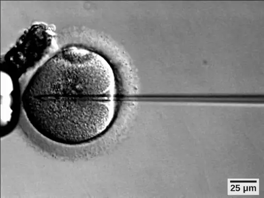
43.6 Fertilization and Early Embryonic Development¶
Learning Objectives
By the end of this section, you will be able to do the following:
- Discuss how fertilization occurs
- Explain how the embryo forms from the zygote
- Discuss the role of cleavage and gastrulation in animal development
The process in which an organism develops from a single-celled zygote to a multi-cellular organism is complex and well-regulated. The early stages of embryonic development are also crucial for ensuring the fitness of the organism.
Fertilization¶
Fertilization, pictured in Figure 43.23a is the process in which gametes (an egg and sperm) fuse to form a zygote. The egg and sperm each contain one set of chromosomes. To ensure that the offspring has only one complete diploid set of chromosomes, only one sperm must fuse with one egg. In mammals, the egg is protected by a layer of extracellular matrix consisting mainly of glycoproteins called the zona pellucida. When a sperm binds to the zona pellucida, a series of biochemical events, called the acrosomal reactions, take place. In placental mammals, the acrosome contains digestive enzymes that initiate the degradation of the glycoprotein matrix protecting the egg and allowing the sperm plasma membrane to fuse with the egg plasma membrane, as illustrated in Figure 43.23b. The fusion of these two membranes creates an opening through which the sperm nucleus is transferred into the ovum. The nuclear membranes of the egg and sperm break down and the two haploid genomes condense to form a diploid genome.
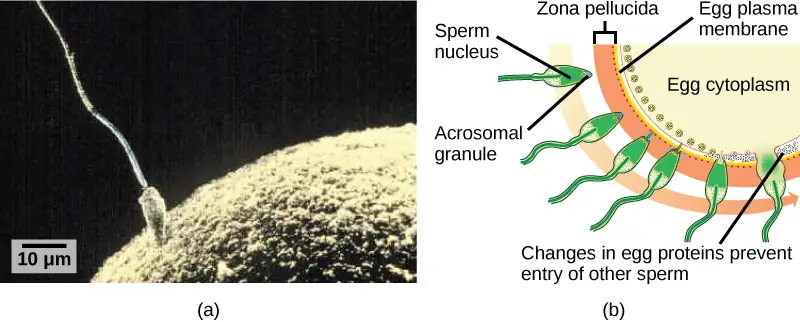
To ensure that no more than one sperm fertilizes the egg, once the acrosomal reactions take place at one location of the egg membrane, the egg releases proteins in other locations to prevent other sperm from fusing with the egg. Ernest Everett Just, who was particularly skilled and knowledgeable in handling invertebrate eggs, demonstrated several mechanisms at work at different rates. The fast reaction included what Just called a "wave of negativity," in which the membrane potential of the egg cell altered quickly. Then, the slow block involved changing the membrane structure itself. If these mechanisms fail, multiple sperm can fuse with the egg, resulting in polyspermy. The resulting embryo is not genetically viable and dies within a few days.
Cleavage and Blastula Stage¶
The development of multi-cellular organisms begins from a single-celled zygote, which undergoes rapid cell division to form the blastula. The rapid, multiple rounds of cell division are termed cleavage. Cleavage is illustrated in (Figure 43.24a). After the cleavage has produced over 100 cells, the embryo is called a blastula. The blastula is usually a spherical layer of cells (the blastoderm) surrounding a fluid-filled or yolk-filled cavity (the blastocoel). Mammals at this stage form a structure called the blastocyst, characterized by an inner cell mass that is distinct from the surrounding blastula, shown in Figure 43.24b. During cleavage, the cells divide without an increase in mass; that is, one large single-celled zygote divides into multiple smaller cells. Each cell within the blastula is called a blastomere.
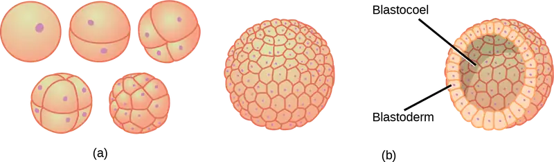
Cleavage can take place in two ways: holoblastic (total) cleavage or meroblastic (partial) cleavage. The type of cleavage depends on the amount of yolk in the eggs. In placental mammals (including humans) where nourishment is provided by the parent’s body, the eggs have a very small amount of yolk and undergo holoblastic cleavage. Other species, such as birds, with a lot of yolk in the egg to nourish the embryo during development, undergo meroblastic cleavage.
In mammals, the blastula forms the blastocyst in the next stage of development. Here the cells in the blastula arrange themselves in two layers: the inner cell mass, and an outer layer called the trophoblast. The inner cell mass is also known as the embryoblast and this mass of cells will go on to form the embryo. At this stage of development, illustrated in Figure 43.25 the inner cell mass consists of embryonic stem cells that will differentiate into the different cell types needed by the organism. The trophoblast will contribute to the placenta and nourish the embryo.
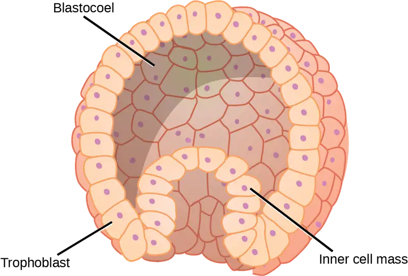
Interactive
Visit the Virtual Human Embryo project at the Endowment for Human Development site to step through an interactive that shows the stages of embryo development, including micrographs and rotating 3-D images.
Gastrulation¶
The typical blastula is a ball of cells. The next stage in embryonic development is the formation of the body plan. The cells in the blastula rearrange themselves spatially to form three layers of cells. This process is called gastrulation. During gastrulation, the blastula folds upon itself to form the three layers of cells. Each of these layers is called a germ layer and each germ layer differentiates into different organ systems.
The three germ layers, shown in Figure 43.26, are the endoderm, the ectoderm, and the mesoderm. The ectoderm gives rise to the nervous system and the epidermis. The mesoderm gives rise to the muscle cells and connective tissue in the body. The endoderm gives rise to columnar cells found in the digestive system and many internal organs.
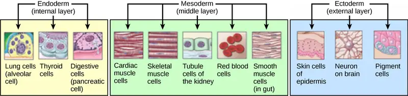
Everyday Connection: Are Designer Babies in Our Future?
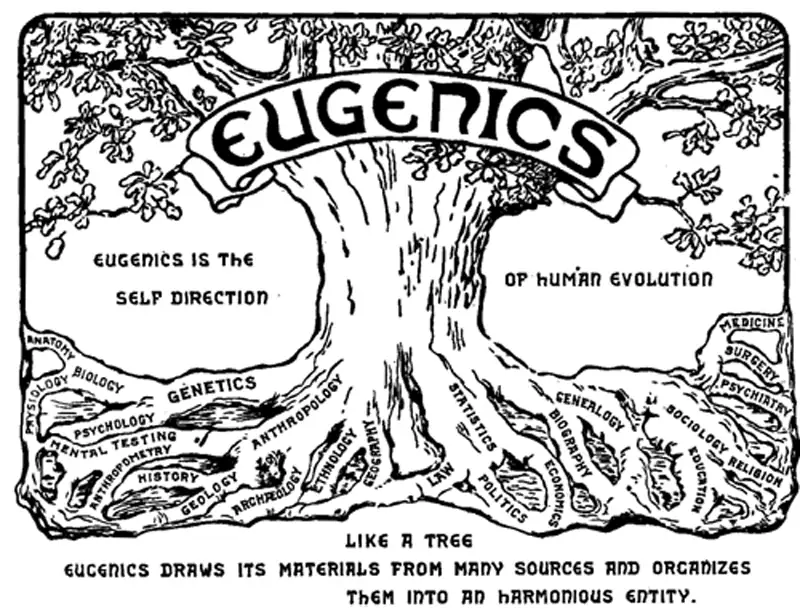
If you could prevent your child from getting a devastating genetic disease, would you do it? Would you select the sex of your child or select for their attractiveness, strength, or intelligence? How far would you go to maximize the possibility of resistance to disease? The genetic engineering of a human child, the production of "designer babies" with desirable phenotypic characteristics, was once a topic restricted to science fiction. This is the case no longer: science fiction is now overlapping into science fact. Many phenotypic choices for offspring are already available, with many more likely to be possible in the not too distant future. Which traits should be selected and how they should be selected are topics of much debate within the worldwide medical community. The ethical and moral line is not always clear or agreed upon, and some fear that modern reproductive technologies could lead to a new form of eugenics.
Eugenics is the use of information and technology from a variety of sources to improve the genetic makeup of the human race. The goal of creating genetically superior humans was quite prevalent (although controversial) in several countries during the early 20th century, but fell into disrepute when Nazi Germany developed an extensive eugenics program in the 1930s and 40s. The Nazis forcibly sterilized hundreds of thousands of the so-called "unfit" and killed tens of thousands of people with disabilities who resided in institutions, both as part of a systematic program to develop a genetically superior race of Germans known as Aryans. Ever since, eugenic ideas have not been as publicly expressed, but there are still those who promote them.
Efforts have been made in the past to control traits in human children using donated sperm from people with desired traits. In fact, eugenicist Robert Klark Graham established a sperm bank in 1980 that included samples exclusively from donors with high IQs. The "genius" sperm bank failed to capture the public's imagination and the operation closed in 1999.
In more recent times, the procedure known as prenatal genetic diagnosis (PGD) has been developed. PGD involves the screening of human embryos as part of the process of in vitro fertilization, during which embryos are conceived and grown outside the mother's body for some period of time before they are implanted. The term PGD usually refers to both the diagnosis, selection, and the implantation of the selected embryos.
In the least controversial use of PGD, embryos are tested for the presence of alleles which cause genetic diseases such as sickle cell disease, muscular dystrophy, and hemophilia, in which a single disease-causing allele or pair of alleles has been identified. By excluding embryos containing these alleles from implantation into the mother, the disease is prevented, and the unused embryos are either donated to science or discarded. There are relatively few in the worldwide medical community that question the ethics of this type of procedure, which allows individuals scared to have children because of the alleles they carry to do so successfully. The major limitation to this procedure is its expense. Not usually covered by medical insurance and thus out of reach financially for most people, only a very small percentage of all live births use such complicated methodologies. Yet, even in cases like these where the ethical issues may seem to be clear-cut, not everyone agrees with the morality of these types of procedures. For example, to those who take the position that human life begins at conception, the discarding of unused embryos, a necessary result of PGD, is unacceptable under any circumstances.
A murkier ethical situation is found in the selection of a child's sex, which is easily performed by PGD. Currently, countries such as Great Britain have banned the selection of a child's sex for reasons other than preventing sex-linked diseases. Other countries allow the procedure for "family balancing", based on the desire of some parents to have at least one child of each sex. Still others, including the United States, have taken a scattershot approach to regulating these practices, essentially leaving it to the individual practicing physician to decide which practices are acceptable and which are not.
Even murkier are rare instances of people with disabilities who select embryos via PGD to ensure that they share their disability. These parents usually cite many positive aspects of their disabilities and associated culture as reasons for their choice, which they see as their moral right. To others, to purposely cause a disability in a child violates the basic medical principle of Primum non nocere, "first, do no harm." This procedure, although not illegal in most countries, demonstrates the complexity of ethical issues associated with choosing genetic traits in offspring.
Where could this process lead? Will this technology become more affordable and how should it be used? With the ability of technology to progress rapidly and unpredictably, a lack of definitive guidelines for the use of reproductive technologies before they arise might make it difficult for legislators to keep pace once they are in fact realized, assuming the process needs any government regulation at all. Other bioethicists argue that we should only deal with technologies that exist now, and not in some uncertain future. They argue that these types of procedures will always be expensive and rare, so the fears of eugenics and "master" races are unfounded and overstated. The debate continues.
43.7 Organogenesis and Vertebrate Axis Formation¶
Learning Objectives
By the end of this section, you will be able to do the following:
- Describe the process of organogenesis
- Identify the anatomical axes formed in vertebrates
Gastrulation leads to the formation of the three germ layers that give rise, during further development, to the different organs in the animal body. This process is called organogenesis. Organogenesis is characterized by rapid and precise movements of the cells within the embryo.
Organogenesis¶
Organs form from the germ layers through the process of differentiation. During differentiation, the embryonic stem cells express specific sets of genes which will determine their ultimate cell type. For example, some cells in the ectoderm will express the genes specific to skin cells. As a result, these cells will differentiate into epidermal cells. The process of differentiation is regulated by cellular signaling cascades.
Scientists study organogenesis extensively in the lab in fruit flies (Drosophila) and the nematode Caenorhabditis elegans. Drosophila have segments along their bodies, and the patterning associated with the segment formation has allowed scientists to study which genes play important roles in organogenesis along the length of the embryo at different time points. The nematode C.elegans has roughly 1000 somatic cells and scientists have studied the fate of each of these cells during their development in the nematode life cycle. There is little variation in patterns of cell lineage between individuals, unlike in mammals where cell development from the embryo is dependent on cellular cues.
In vertebrates, one of the primary steps during organogenesis is the formation of the neural system. The ectoderm forms epithelial cells and tissues, and neuronal tissues. During the formation of the neural system, special signaling molecules called growth factors signal some cells at the edge of the ectoderm to become epidermis cells. The remaining cells in the center form the neural plate. If the signaling by growth factors were disrupted, then the entire ectoderm would differentiate into neural tissue.
The neural plate undergoes a series of cell movements where it rolls up and forms a tube called the neural tube, as illustrated in Figure 43.28. In further development, the neural tube will give rise to the brain and the spinal cord.
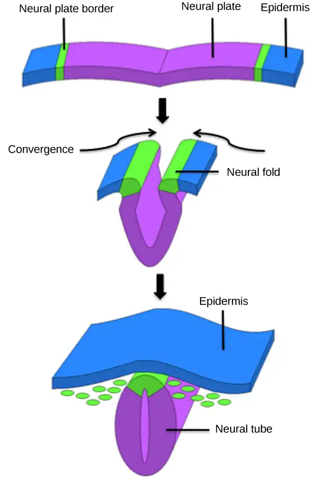
The mesoderm that lies on either side of the vertebrate neural tube will develop into the various connective tissues of the animal body. A spatial pattern of gene expression reorganizes the mesoderm into groups of cells called somites with spaces between them. The somites illustrated in Figure 43.29 will further develop into the cells that form the vertebrae and ribs, the dermis of the dorsal skin, the skeletal muscles of the back, and the skeletal muscles of the body wall and limbs. The mesoderm also forms a structure called the notochord, which is rod-shaped and forms the central axis of the animal body.
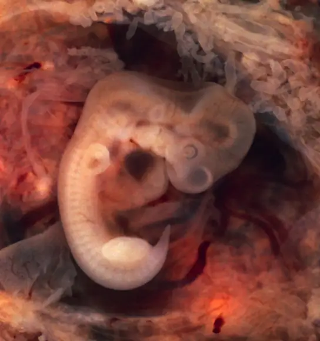
Vertebrate Axis Formation¶
Even as the germ layers form, the ball of cells still retains its spherical shape. However, animal bodies have lateral-medial (left-right), dorsal-ventral (back-belly), and anterior-posterior (head-feet) axes, illustrated in Figure 43.30.
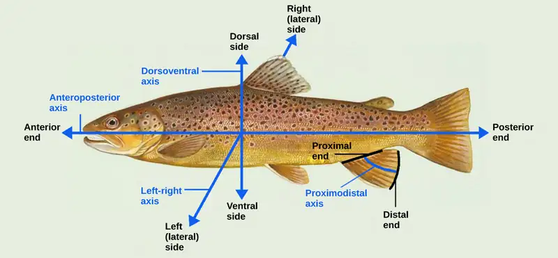
How are these established? In one of the most seminal experiments ever to be carried out in developmental biology, Spemann and Mangold took dorsal cells from one embryo and transplanted them into the belly region of another embryo. They found that the transplanted embryo now had two notochords: one at the dorsal site from the original cells and another at the transplanted site. This suggested that the dorsal cells were genetically programmed to form the notochord and define the axis. Since then, researchers have identified many genes that are responsible for axis formation. Mutations in these genes leads to the loss of symmetry required for organism development.
Animal bodies have externally visible symmetry. However, the internal organs are not symmetric. For example, the heart is on the left side and the liver on the right. The formation of the central left-right axis is an important process during development. This internal asymmetry is established very early during development and involves many genes. Research is still ongoing to fully understand the developmental implications of these genes.
Chapter Review¶
Key Terms¶
- acrosomal reaction
- series of biochemical reactions that the sperm uses to break through the zona pellucida
- asexual reproduction
- form of reproduction that produces offspring that are genetically identical to the parent
- blastocyst
- structure formed when cells in the mammalian blastula separate into an inner and outer layer
- budding
- form of asexual reproduction that results from the outgrowth of a part of a cell leading to a separation from the original animal into two individuals
- bulbourethral gland
- secretion that cleanses the urethra prior to ejaculation
- clitoris
- sensory structure in females; stimulated during sexual arousal
- cloaca
- common body opening for the digestive, excretory, and reproductive systems found in non-mammals, such as birds
- contraception
- (also, birth control) various means used to prevent pregnancy
- estradiol
- most potent form of estrogen that is responsible for the development of female secondary female characteristics, maintenance of female reproductive organs, and preparation for pregnancy
- estrogen
- reproductive hormone in females that assists in endometrial regrowth, ovulation, and calcium absorption
- external fertilization
- fertilization of egg by sperm outside animal body, often during spawning
- fission
- (also, binary fission) method by which multicellular organisms increase in size or asexual reproduction in which a unicellular organism splits into two separate organisms by mitosis
- follicle stimulating hormone (FSH)
- reproductive hormone that causes sperm production in males and follicle development in females
- fragmentation
- cutting or fragmenting of the original animal into parts and the growth of a separate animal from each part
- gastrulation
- process in which the blastula folds over itself to form the three germ layers
- gestation
- length of time for fetal development to birth
- gonadotropin-releasing hormone (GnRH)
- hormone from the hypothalamus that causes the release of FSH and LH from the anterior pituitary
- hermaphroditism
- state of having both male and female reproductive parts within the same individual organism; refers only to nonhuman animals
- holoblastic
- complete cleavage; takes place in cells with a small amount of yolk
- human beta chorionic gonadotropin (β-HCG)
- hormone produced by the chorion of the zygote that helps to maintain the corpus luteum and elevated levels of progesterone
- infertility
- inability to conceive, carry, and deliver children
- inhibin
- hormone made by Sertoli cells; provides negative feedback to hypothalamus in control of FSH and GnRH release
- inner cell mass
- inner layer of cells in the blastocyst
- internal fertilization
- fertilization of egg by sperm inside the body of the female
- interstitial cell of Leydig
- cell in seminiferous tubules that makes testosterone
- labia majora
- large folds of tissue covering the inguinal area
- labia minora
- smaller folds of tissue within the labia majora
- luteinizing hormone (LH)
- reproductive hormone in both males and females, causes testosterone production in males and ovulation and lactation in females
- menopause
- loss of reproductive capacity due to decreased sensitivity of the ovaries to FSH and LH
- menstrual cycle
- cycle of the degradation and regrowth of the endometrium
- meroblastic
- partial cleavage; takes place in cells with a large amount of yolk
- morning sickness
- condition in pregnant people during the first trimester; includes feelings of nausea
- neural tube
- tube-like structure that forms from the ectoderm and gives rise to the brain and spinal cord
- oogenesis
- process of producing haploid eggs
- organogenesis
- process of organ formation
- ovarian cycle
- cycle of preparation of egg for ovulation and the conversion of the follicle to the corpus luteum
- oviduct
- (also, fallopian tube) muscular tube connecting the uterus with the ovary area
- oviparity
- process by which fertilized eggs are laid outside the female’s body and develop there, receiving nourishment from the yolk that is a part of the egg
- ovoviviparity
- process by which fertilized eggs are retained within the female; the embryo obtains its nourishment from the egg’s yolk and the young are fully developed when they are hatched
- ovulation
- release of the egg by the most mature follicle
- parthenogenesis
- form of asexual reproduction where an egg develops into a complete individual without being fertilized
- penis
- male reproductive structure for urine elimination and copulation
- placenta
- organ that supports the diffusion of nutrients and waste between the pregnant person’s and fetus’ blood
- polyspermy
- condition in which one egg is fertilized by multiple sperm
- progesterone
- reproductive hormone in females; assists in endometrial regrowth and inhibition of FSH and LH release
- prostate gland
- structure that is a mixture of smooth muscle and glandular material and that contributes to semen
- scrotum
- sac containing testes; exterior to the body
- semen
- fluid mixture of sperm and supporting materials
- seminal vesicle
- secretory accessory gland in males; contributes to semen
- seminiferous tubule
- site of sperm production in testes
- Sertoli cell
- cell in seminiferous tubules that assists developing sperm and makes inhibin
- sexual reproduction
- mixing of genetic material from two individuals to produce genetically unique offspring
- somite
- group of cells separated by small spaces that form from the mesoderm and give rise to connective tissue
- spermatheca
- specialized sac that stores sperm for later use
- spermatogenesis
- process of producing haploid sperm
- testes
- pair of reproductive organs in males
- testosterone
- reproductive hormone in men that assists in sperm production and promoting secondary sexual characteristics
- trophoblast
- outer layer of cells in the blastocyst
- uterus
- environment for developing embryo and fetus
- vagina
- muscular tube for the passage of menstrual flow, copulation, and birth of offspring
- viviparity
- process in which the young develop within the female, receiving nourishment from the mother’s blood through a placenta
- zona pellucida
- protective layer of glycoproteins on the mammalian egg
Summary¶
43.1 Reproduction Methods¶
Reproduction may be asexual when one individual produces genetically identical offspring, or sexual when the genetic material from two individuals is combined to produce genetically diverse offspring. Asexual reproduction occurs through fission, budding, and fragmentation. Sexual reproduction may mean the joining of sperm and eggs within animals’ bodies or it may mean the release of sperm and eggs into the environment. An individual may be one sex, or both; it may start out as one sex and switch during its life, or it may stay male or female.
43.2 Fertilization¶
Sexual reproduction starts with the combination of a sperm and an egg in a process called fertilization. This can occur either outside the bodies or inside the female. Both methods have advantages and disadvantages. Once fertilized, the eggs can develop inside the female or outside. If the egg develops outside the body, it usually has a protective covering over it. Animal anatomy evolved various ways to fertilize, hold, or expel the egg. The method of fertilization varies among animals. Some species release the egg and sperm into the environment, some species retain the egg and receive the sperm into the female body and then expel the developing embryo covered with shell, while still other species retain the developing offspring through the gestation period.
43.3 Human Reproductive Anatomy and Gametogenesis¶
As animals became more complex, specific organs and organ systems developed to support specific functions for the organism. The reproductive structures that evolved in land animals allow males and females to mate, fertilize internally, and support the growth and development of offspring. Processes developed to produce reproductive cells that had exactly half the number of chromosomes of each parent so that new combinations would have the appropriate amount of genetic material. Gametogenesis, the production of sperm (spermatogenesis) and eggs (oogenesis), takes place through the process of meiosis.
43.4 Hormonal Control of Human Reproduction¶
The male and female reproductive cycles are controlled by hormones released from the hypothalamus and anterior pituitary as well as hormones from reproductive tissues and organs. The hypothalamus monitors the need for the FSH and LH hormones made and released from the anterior pituitary. FSH and LH affect reproductive structures to cause the formation of sperm and the preparation of eggs for release and possible fertilization. In the male, FSH and LH stimulate Sertoli cells and interstitial cells of Leydig in the testes to facilitate sperm production. The Leydig cells produce testosterone, which also is responsible for the secondary sexual characteristics of males. In females, FSH and LH cause estrogen and progesterone to be produced. They regulate the female reproductive system which is divided into the ovarian cycle and the menstrual cycle. Menopause occurs when the ovaries lose their sensitivity to FSH and LH and the reproductive cycles slow to a stop.
43.5 Human Pregnancy and Birth¶
Human pregnancy begins with fertilization of an egg and proceeds through the three trimesters of gestation. The labor process has three stages (contractions, delivery of the fetus, expulsion of the placenta), each propelled by hormones. The first trimester lays down the basic structures of the body, including the limb buds, heart, eyes, and the liver. The second trimester continues the development of all of the organs and systems. The third trimester exhibits the greatest growth of the fetus and culminates in labor and delivery. Prevention of a pregnancy can be accomplished through a variety of methods including barriers, hormones, or other means. Assisted reproductive technologies may help individuals who have infertility problems.
43.6 Fertilization and Early Embryonic Development¶
The early stages of embryonic development begin with fertilization. The process of fertilization is tightly controlled to ensure that only one sperm fuses with one egg. After fertilization, the zygote undergoes cleavage to form the blastula. The blastula, which in some species is a hollow ball of cells, undergoes a process called gastrulation, in which the three germ layers form. The ectoderm gives rise to the nervous system and the epidermal skin cells, the mesoderm gives rise to the muscle cells and connective tissue in the body, and the endoderm gives rise to columnar cells and internal organs.
43.7 Organogenesis and Vertebrate Axis Formation¶
Organogenesis is the formation of organs from the germ layers. Each germ layer gives rise to specific tissue types. The first stage is the formation of the neural system in the ectoderm. The mesoderm gives rise to somites and the notochord. Formation of vertebrate axis is another important developmental stage.
Review Questions¶
43.1 Reproduction Methods¶
1. Which form of reproduction is thought to be best in a stable environment?
- asexual
- sexual
- budding
- parthenogenesis
Answer
A
2. Which form of reproduction can result from damage to the original animal?
- asexual
- fragmentation
- budding
- parthenogenesis
Answer
B
3. Which form of reproduction is useful to an animal with little mobility that reproduces sexually?
- fission
- budding
- parthenogenesis
- hermaphroditism
Answer
D
4. Genetically unique individuals are produced through ________.
- sexual reproduction
- parthenogenesis
- budding
- fragmentation
Answer
A
43.2 Fertilization¶
5. External fertilization occurs in which type of environment?
- aquatic
- forested
- savanna
- steppe
Answer
A
6. Which term applies to egg development within the female with nourishment derived from a yolk?
- oviparity
- viviparity
- ovoviviparity
- ovoparity
Answer
C
7. Which term applies to egg development outside the female with nourishment derived from a yolk?
- oviparity
- viviparity
- ovoviviparity
- ovovoparity
Answer
A
43.3 Human Reproductive Anatomy and Gametogenesis¶
8. Sperm are produced in the ________.
- scrotum
- seminal vesicles
- seminiferous tubules
- prostate gland
Answer
C
9. Most of the semen is made by the ________ in the reproductive system.
- scrotum
- seminal vesicles
- seminiferous tubules
- prostate gland
Answer
C
10. Which of the following cells in spermatogenesis is diploid?
- primary spermatocyte
- secondary spermatocyte
- spermatid
- sperm
Answer
A
11. Which organ has the same embryonic origin as the penis?
- clitoris
- labia majora
- greater vestibular glands
- vagina
Answer
A
12. Which organ has an endometrial lining that will support a developing baby?
- labia minora
- breast
- ovaries
- uterus
Answer
D
13. How many eggs are produced as a result of one meiotic series of cell divisions?
- one
- two
- three
- four
Answer
A
43.4 Hormonal Control of Human Reproduction¶
14. Which hormone causes Leydig cells to make testosterone?
- FSH
- LH
- inhibin
- estrogen
Answer
B
15. Which hormone causes FSH and LH to be released?
- testosterone
- estrogen
- GnRH
- progesterone
Answer
C
16. Which hormone signals ovulation?
- FSH
- LH
- inhibin
- estrogen
Answer
B
17. Which hormone causes the regrowth of the endometrial lining of the uterus?
- testosterone
- estrogen
- GnRH
- progesterone
Answer
D
43.5 Human Pregnancy and Birth¶
18. Nutrient and waste requirements for the developing fetus are handled during the first few weeks by:
- the placenta
- diffusion through the endometrium
- the chorion
- the blastocyst
Answer
B
19. Progesterone is made during the third trimester by the:
- placenta
- endometrial lining
- chorion
- corpus luteum
Answer
A
20. Which of these methods is regarded as permanent contraception?
- condom
- oral hormonal methods
- sterilization
- abstinence
Answer
C
21. Which type of short term contraceptive method is generally more effective than others?
- barrier
- hormonal
- natural family planning
- withdrawal
Answer
B
22. Which hormone is primarily responsible for the contractions during labor?
- oxytocin
- estrogen
- β-HCG
- progesterone
Answer
A
23. Major organs begin to develop during which part of human gestation?
- fertilization
- first trimester
- second trimester
- third trimester
Answer
B
43.6 Fertilization and Early Embryonic Development¶
24. Which of the following is false?
- The endoderm, mesoderm, ectoderm are germ layers.
- The trophoblast is a germ layer.
- The inner cell mass is a source of embryonic stem cells.
- The blastula is often a hollow ball of cells.
Answer
B
25. During cleavage, the mass of cells:
- increases
- decreases
- doubles with every cell division
- does not change significantly
Answer
D
43.7 Organogenesis and Vertebrate Axis Formation¶
26. Which of the following gives rise to the skin cells?
- ectoderm
- endoderm
- mesoderm
- none of the above
Answer
A
27. The ribs form from the ________.
- notochord
- neural plate
- neural tube
- somites
Answer
D
Critical Thinking Questions¶
43.1 Reproduction Methods¶
28. Why is sexual reproduction useful if only half the animals can produce offspring and two separate cells must be combined to form a third?
Answer
Sexual reproduction produces a new combination of genes in the offspring that may better enable them to survive changes in the environment and assist in the survival of the species.
29. What determines which sex will result in offspring of birds and mammals?
Answer
The presence of the W chromosome in birds determines femaleness and the presence of the Y chromosome in mammals determines maleness. The absence of those chromosomes and the homogeneity of the offspring (ZZ or XX) leads to the development of the other sex.
43.2 Fertilization¶
30. What are the advantages and disadvantages of external and internal forms of fertilization?
Answer
External fertilization can create large numbers of offspring without requiring specialized delivery or reproductive support organs. Offspring develop and mature quickly compared to internally fertilizing species. A disadvantage is that the offspring are out in the environment and predation can account for large loss of offspring. The embryos are susceptible to changes in the environment, which further depletes their numbers. Internally fertilizing species control their environment and protect their offspring from predators but must have specialized organs to complete these tasks and usually produce fewer embryos.
31. Why would paired external fertilization be preferable to group spawning?
Answer
Paired external fertilization allows the female to select the male for mating. It also has a greater chance of fertilization taking place, whereas spawning just puts a large number of sperm and eggs together and random interactions result in the fertilization.
43.3 Human Reproductive Anatomy and Gametogenesis¶
32. Describe the phases of the human sexual response.
Answer
In phase one (excitement), vasodilation leads to vasocongestion and enlargement of erectile tissues. Vaginal secretions are released to lubricate the vagina during intercourse. In phase two (plateau), stimulation continues, the outer third of the vaginal wall enlarges with blood, and breathing and heart rate increase. In phase three (orgasm), rhythmic, involuntary contractions of muscles occur. In the male, reproductive accessory glands and tubules constrict, depositing semen in the urethra; then, the urethra contracts, expelling the semen through the penis. In women, the uterus and vaginal muscles contract in waves that may last slightly less than a second each. In phase four (resolution), the processes listed in the first three phases reverse themselves and return to their normal state. Men experience a refractory period in which they cannot maintain an erection or ejaculate for a period of time ranging from minutes to hours. Women do not experience a refractory period.
33. Compare spermatogenesis and oogenesis as to timing of the processes and the number and type of cells finally produced.
Answer
Stem cells are laid down in the male during gestation and lie dormant until adolescence. Stem cells in the female increase to one to two million and enter the first meiotic division and are arrested in prophase. At adolescence, spermatogenesis begins and continues until death, producing the maximum number of sperm with each meiotic division. Oogenesis continues again at adolescence in batches of oogonia with each menstrual cycle. These oogonia finish the first meiotic division, producing a primary oocyte with most of the cytoplasm and its contents, and a second cell called a polar body containing 23 chromosomes. The second meiotic division results in a secondary oocyte and a second oocyte. At ovulation, a mature haploid egg is released. If this egg is fertilized, it finishes the second meiotic division, including the chromosomes donated by the sperm in the finished cell. This is a diploid, fertilized egg.
43.4 Hormonal Control of Human Reproduction¶
34. If male reproductive pathways are not cyclical, how are they controlled?
Answer
Negative feedback in the male system is supplied through two hormones: inhibin and testosterone. Inhibin is produced by Sertoli cells when the sperm count exceeds set limits. The hormone inhibits GnRH and FSH, decreasing the activity of the Sertoli cells. Increased levels of testosterone affect the release of both GnRH and LH, decreasing the activity of the Leydig cells, resulting in decreased testosterone and sperm production.
35. Describe the events in the ovarian cycle leading up to ovulation.
Answer
Low levels of progesterone allow the hypothalamus to send GnRH to the anterior pituitary and cause the release of FSH and LH. FSH stimulates follicles on the ovary to grow and prepare the eggs for ovulation. As the follicles increase in size, they begin to release estrogen and a low level of progesterone into the blood. The level of estrogen rises to a peak, causing a spike in the concentration of LH. This causes the most mature follicle to rupture and ovulation occurs.
43.5 Human Pregnancy and Birth¶
36. Describe the major developments during each trimester of human gestation.
Answer
The first trimester lays down the basic structures of the body, including the limb buds, heart, eyes, and the liver. The second trimester continues the development of all of the organs and systems established during the first trimester. The placenta takes over the production of estrogen and high levels of progesterone and handles the nutrient and waste requirements of the fetus. The third trimester exhibits the greatest growth of the fetus, culminating in labor and delivery.
37. Describe the stages of labor.
Answer
Stage one of labor results in the thinning of the cervix and the dilation of the cervical opening. Stage two delivers the baby, and stage three delivers the placenta.
43.6 Fertilization and Early Embryonic Development¶
38. What do you think would happen if multiple sperm fused with one egg?
Answer
Multiple sperm can fuse with the egg, resulting in polyspermy. The resulting embryo is not genetically viable and dies within a few days.
39. Why do mammalian eggs have a small concentration of yolk, while bird and reptile eggs have a large concentration of yolk?
Answer
Mammalian eggs do not need a lot of yolk because the developing fetus obtains nutrients from the mother. Other species, in which the fetus develops outside of the mother’s body, such as occurs with birds, require a lot of yolk in the egg to nourish the embryo during development.
43.7 Organogenesis and Vertebrate Axis Formation¶
40. Explain how the different germ layers give rise to different tissue types.
Answer
Organs form from the germ layers through the process of differentiation. During differentiation, the embryonic stem cells express a specific set of genes that will determine their ultimate fate as a cell type. For example, some cells in the ectoderm will express the genes specific to skin cells. As a result, these cells will differentiate into epidermal cells. The process of differentiation is regulated by cellular signaling cascades.
41. Explain the role of axis formation in development.
Answer
Animal bodies have lateral-medial (left-right), dorsal-ventral (back-belly), and anterior-posterior (head-feet) axes. The dorsal cells are genetically programmed to form the notochord and define the axis. There are many genes responsible for axis formation. Mutations in these genes lead to the loss of symmetry required for organism development.
Visual Connection Questions¶
43.3 Human Reproductive Anatomy and Gametogenesis¶
42. Figure 43.8 Which of the following statements about the male reproductive system is false?
- The vas deferens carries sperm from the testes to the penis.
- Sperm mature in seminiferous tubules in the testes.
- Both the prostate and the bulbourethral glands produce components of the semen.
- The prostate gland is located in the testes.
Answer
43.4 Hormonal Control of Human Reproduction¶
43. Figure 43.15 Which of the following statements about hormone regulation of the ovarian reproductive cycle is false?
- LH and FSH are produced in the pituitary, and estradiol and progesterone are produced in the ovaries.
- Estradiol and progesterone secreted from the corpus luteum cause the endometrium to thicken.
- Both progesterone and estradiol are produced by the follicles.
- Secretion of GnRH by the hypothalamus is inhibited by low levels of estradiol but stimulated by high levels of estradiol.
Answer
44. Figure 43.17 Which of the following statements about the menstrual cycle is false?
- Progesterone levels rise during the luteal phase of the ovarian cycle and the secretory phase of the uterine cycle.
- Menstruation occurs just after LH and FSH levels peak.
- Menstruation occurs after progesterone levels drop.
- Estrogen levels rise before ovulation, while progesterone levels rise after.
Answer
Adapted from Biology 2e by OpenStax, licensed under CC BY 4.0. Access the original for free at openstax.org. Changes: converted to the web reading format of The Open Book Project.